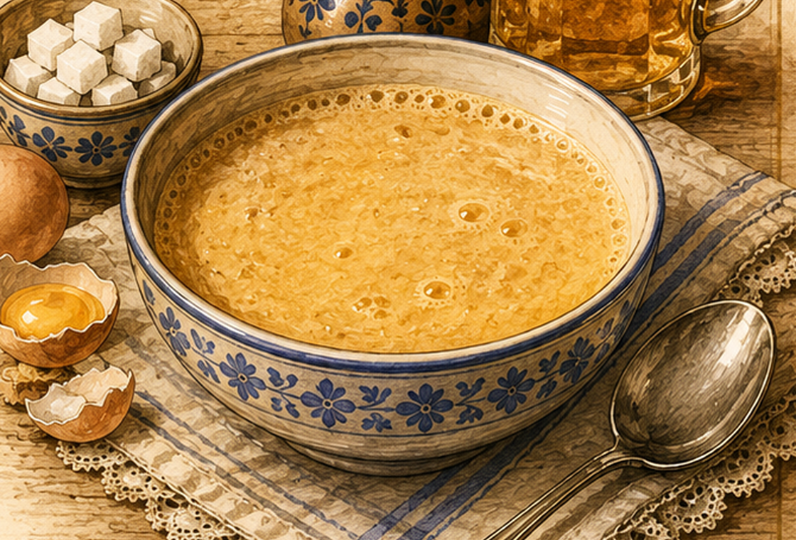

Eierbier / Warmbiersuppe
Eine warme Biersuppe, die mit Eigelb, Zucker und etwas Mehl gebunden wird.

Originale Überlieferung
„Eierbier oder Warmbier. ¾ l Bier wird aufgekocht. Drei Eidotter werden mit 1/16 l Zucker und einer kleinen Menge Mehl fein verquirlt und in das aufgekochte Bier eingerührt.“ Die Mehlangabe ist in der Handschrift nicht ganz eindeutig lesbar.
Moderne Übertragung
Das Bier wird erhitzt. Eigelb, Zucker und wenig Mehl werden glatt verrührt, zunächst mit etwas heißem Bier angeglichen und dann unter Rühren in den Topf gegeben. Danach darf die Suppe nicht mehr kochen.
Zutaten
- 750 ml mildes Bier
- 3 Eigelb
- etwa 50 g Zucker
- 1 EL Mehl (Angabe in der Handschrift nicht völlig eindeutig)
Zubereitung
- Das Bier in einem Topf langsam erhitzen und einmal kurz aufwallen lassen.
- Eigelb, Zucker und Mehl in einer Schüssel klümpchenfrei verquirlen.
- Etwas heißes Bier unter Rühren zur Eigelbmischung geben.
- Die Mischung in den Topf rühren und nur noch sanft erhitzen, nicht mehr kochen.